Terra Agri Farms East Africa Ltd is a family-owned business
established in 2019, rooted in over 40 years of experience
operating and managing farms across Africa. Today, we cultivate
over 6,000 acres of farmland across East Africa, growing a wide
range of crops that contribute directly to regional food security
and economic development.
Our legacy began decades ago with a vision to transform African
agriculture—not just for yield, but for sustainability,
resilience, and opportunity. We’ve grown from a traditional
farming operation into a leading agribusiness known for
climate-smart practices, innovative technologies, and a deep
commitment to community and environmental stewardship.


 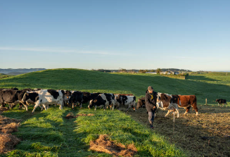
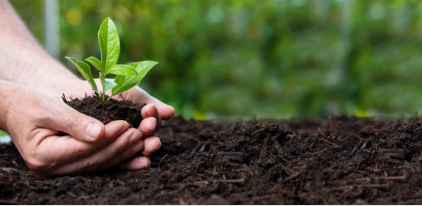
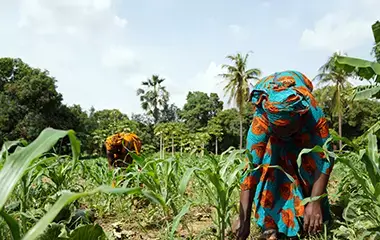
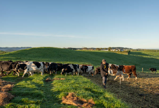
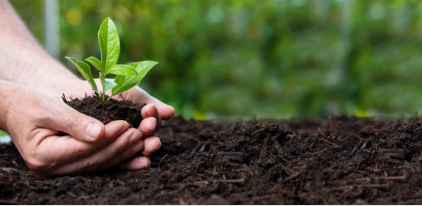
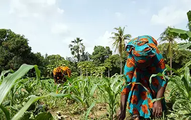
 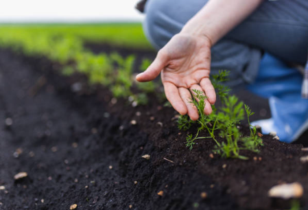
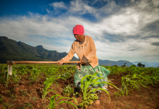
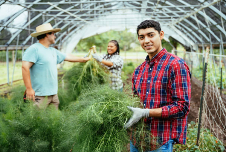
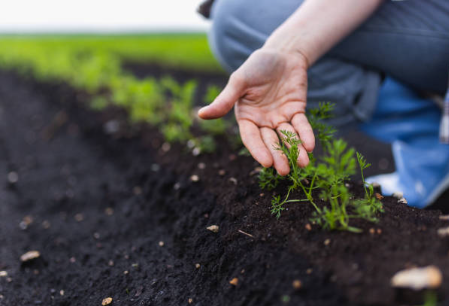
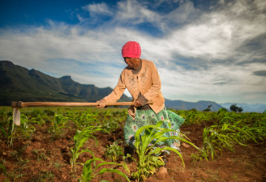
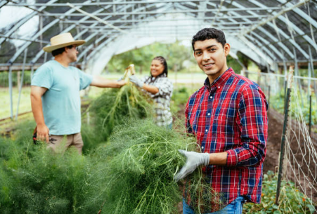